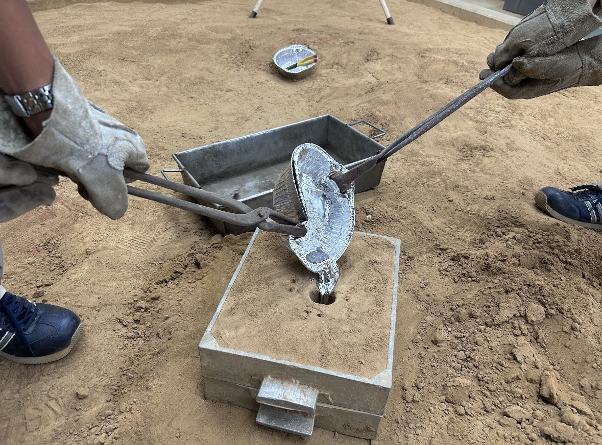

自作ルアーの開発から実釣までを記録しています。
木粘土で型を作成した。
砂型の作成。型を作成した後にフィリピン旅に行ったので期間があいてしまっています。

砂型が乾燥して固まったので、そこへ溶かした鉛を流した。この鉛は、釣具屋で購入した重りだ。容器は百均で購入したアルミ容器を使用している。鉛の融点は350度ほどなのでバーナーで溶かした。


成型。


釣り検証。朝5時に堤防へ到着した。結果は4投で根がかりロストとなった。まだ日が出ておらず暗かったので、どのような動きをしているのかなど確認できず終わってしまった。作ったルアーは2つあるので次の釣行で再挑戦したい。